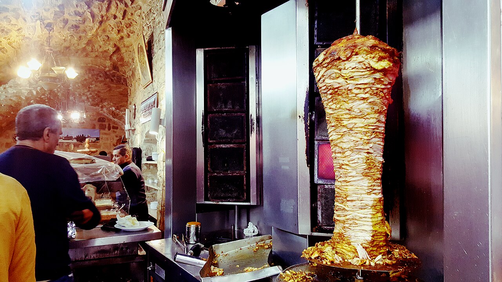
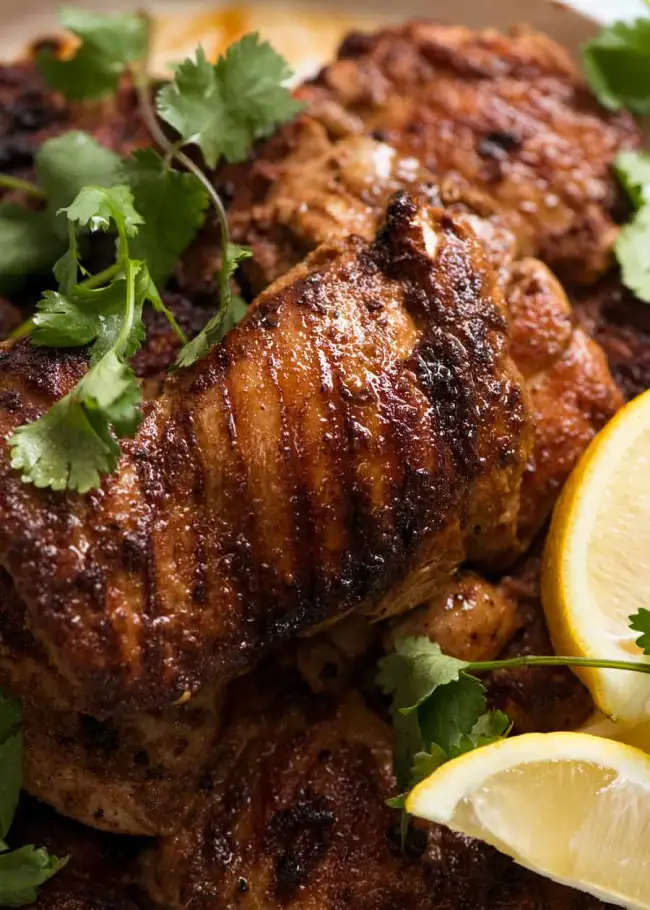
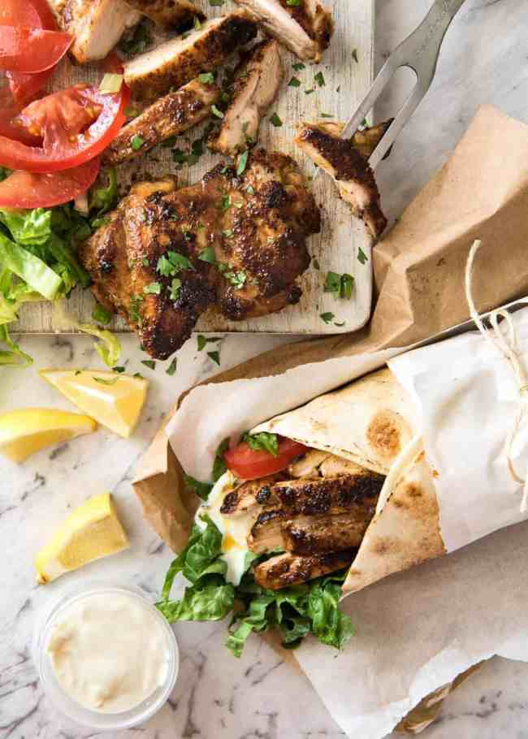
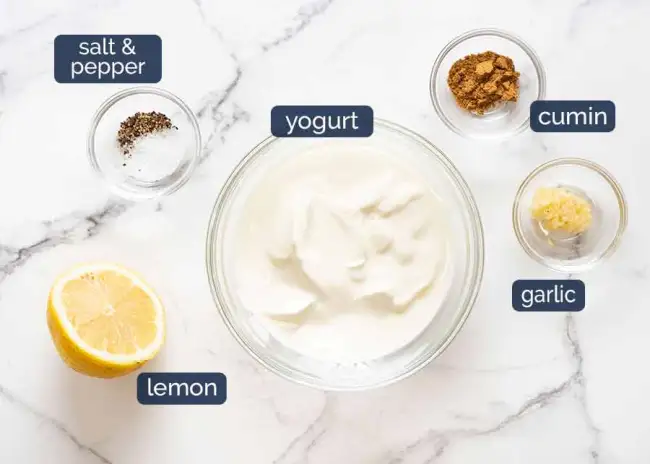
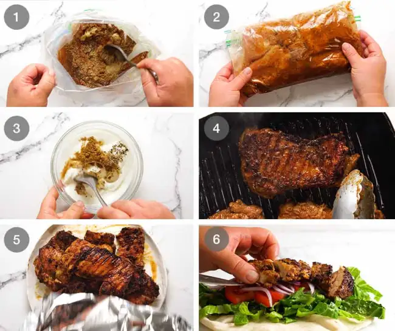

Shawerma

Chicken Shawarma (Middle Eastern)
This Chicken Shawarma recipe is going to knock your socks off! Just a handful of every day spices makes an incredible Chicken Shawarma marinade that infuses the chicken with exotic Middle Eastern flavours. The smell when this is cooking is insane!
Chicken Shawarma
This is one of my signature recipes that will be very familiar to all my friends because I make this so often. It’s off the charts for effort vs output: just a handful of everyday spices, garlic, a splash of lemon and olive oil transforms into the most incredible flavour.
When this chicken is cooking, the smell is incredible. In fact, it’s how I met most of my neighbours when I lived in a townhouse complex, random people I had never met before popping their head over the fence wanting to know what on earth I was making. They were elated when I handed out samples!

What is Chicken Shawarma, actually??
Shawarma is a popular dish originating from the Middle East. It’s a popular street food that is traditionally made in the form of spiced meats that are stacked on a vertical rotisserie with thin slices shaved off as it rotates. But don’t worry! We can cook our horizontally in a good old pan or on the BBQ!
Shawarma was traditionally made with lamb, mutton and chicken though these days you see it with beef too. It’s commonly served in the form of a wrap, though in some countries you see it served on plates with sides such as seasoned rice or fries, and salads. In this recipe, I’m giving you both options

Ingredients in Chicken Shawarma
Here’s what you need to make Chicken Shawarma. I’m betting you have most if not all of the spices in your pantry already!
- Chicken: I like to make Shawarma with boneless, skinless thighs as its juicier than breast. But chicken breast and tenderloin both work great.
- Lemon juice: Fresh!
- Olive oil: For a touch of flavour but also to dilute the lemon juice so it doesn’t “cook” the chicken (like we intentionally do with ceviche!)
- Spices: Nothing out of the ordinary here! The only one you might not have in stock is cardamom, though these days its easily found at any grocery store. It has a piney, sort of citrusy flavour and it is a key ingredient that distinguishes the Shawarma marinade from other cuisines, such as Mexican, that regularly uses the other spices used in this recipe. In short, don’t skip it!
- Spice control: The spiciness in the Shawarma marinade comes from the cayenne pepper. It’s not a key element of the flavour so if you don’t want it spicy, either reduce or eliminate it altogether. I promise you won’t feel robbed. Lots of other flavours going on in this dish!
SAUCE OPTIONS FOR SHAWARMA
Shawarma is traditionally served with either a tahini sauce (common in Israel) or a Yogurt Sauce. If you’d like to use a tahini sauce, use the one in this Roasted Broccolini recipe.
For a Lemon Yogurt Sauce, here’s what you need:

How to make Chicken Shawarma
For the best results, it’s best to marinate the chicken overnight. But to be honest, the volume and flavour of the marinade is intense enough that you can get away with a minimum of 3 hours of marinating. Been there, done that plenty of times, and nobody has complained!

- Mix marinade For convenience, just mix the marinade directly in a ziplock bag. A bag works best because the chicken remains nicely coated in the marinade. If you prefer to use a container, either turn the chicken a few times or increase the marinade by 50%.
- Add chicken into the marinade. Seal the bag, removing excess air, then massage to coat from the outside. Leave to marinade for 12 to 24 hours in the fridge. If you’re pressed for time, even 3 hours will do!
- Yogurt sauce Make the yogurt sauce simply by mixing the ingredients then set aside for at least 20 minutes to let the flavours meld. This will keep for 3 days in the fridge.
- Cook chicken either on the stove or on the BBQ. It will get a great crust on it from the spices, and you will adore the smell. It’s intoxicating!
- Rest chicken for at least 3 minutes before serving to allow the juices to redistribute throughout the flesh, else they will just run out everywhere when you slice the meat.
- To serve just pile everything on a platter and let everybody make their own wraps! The chicken, lettuce, tomato slices, onion, yogurt sauce and warmed flatbreads – homemade or store bought. If the chicken is on the larger side, I sometimes slice it. But if they are smaller, I tend to just leave them whole
How to Serve Chicken Shawarma
- Wraps: As Chicken Shawarma wraps (like Gyros and Doner kebabs), with tomato, lettuce, and a simple yoghurt sauce on the side. Other optional extras include: red onion, cheese (query authenticity? But that’s ok!!), hummus, hot sauce / chilli sauce
- Shawarma plate With rice and salads on the side. Thought I usually do serve pita bread or another type of flatbread as well, with a big dollop of either Hummus or the Yogurt Sauce in this recipe, just because it’s very on theme. ☺️
Below, the Chicken Shawarma is pictured with Mejadra which is a Middle Eastern lentil rice (seriously so good you can / will want to eat it just by itself!) and a Middle Eastern Chickpea Salad (I skip the spicing of chickpeas otherwise there’s just too much kapow spices going on).
Ingredients
- MARINADE
- 1 large garlic clove, minced (or 2 small cloves)
- 1 tbsp ground coriander
- 1 tbsp ground cumin
- 1 tbsp ground cardamon
- 1 tsp ground cayenne pepper (reduce to 1/2 tsp to make it not spicy)
- 2 tsp smoked paprika
- 2 tsp salt
- Black pepper
- 2 tbsp lemon juice
- 3 tbsp olive oil
- YOGHURT SAUCE
- 1 cup Greek yoghurt
- 1 clove garlic, crushed
- 1 tsp cumin
- Squeeze of lemon juice
- Salt and pepper
- TO SERVE
- 4–5 flatbreads (Lebanese or pita bread or homemade soft flatbreads)
- Sliced lettuce (cos or iceberg)
- Tomato slices
- Red onion, finely sliced
- Cheese, shredded (optional)
- Hot sauce of choice (optional)
- **Marinade chicken:** Combine the marinade ingredients in a large ziplock bag. Add the chicken, seal, and massage from the outside with your hands to make sure each piece is coated. Marinate 24 hours (minimum 3 hours).
- **Make the yogurt sauce:** Combine the yogurt sauce ingredients in a bowl and mix. Cover and put in the fridge until required (it will last for 3 days in the fridge).
- **Preheat stove or BBQ:** Heat a large non-stick skillet with 1 tablespoon over medium high heat, or lightly brush a BBQ hotplate/grills with oil and heat to medium high. (See notes for baking)
- **Cook chicken:** Place chicken in the skillet or on the grill and cook the first side for 4 to 5 minutes until nicely charred. Turn and cook the other side for 3 to 4 minutes (the 2nd side takes less time).
- **Rest:** Remove chicken from the grill and cover loosely with foil. Set aside to rest for 5 minutes.
- **TO SERVE:** Slice chicken and pile onto platter alongside flatbreads, salad and the yogurt sauce (or dairy free tahini sauce from this recipe).
- **To make a wrap:** Get a piece of flatbread and smear with yogurt sauce. Top with a bit of lettuce and tomato and chicken shawarma. Roll up and enjoy!
Instructions
- **Marinade chicken:** Combine the marinade ingredients in a large ziplock bag. Add the chicken, seal, and massage from the outside with your hands to make sure each piece is coated. Marinate 24 hours (minimum 3 hours).
- **Make the yogurt sauce:** Combine the yogurt sauce ingredients in a bowl and mix. Cover and put in the fridge until required (it will last for 3 days in the fridge).
- **Preheat stove or BBQ:** Heat a large non-stick skillet with 1 tablespoon over medium high heat, or lightly brush a BBQ hotplate/grills with oil and heat to medium high. (See notes for baking)
- **Cook chicken:** Place chicken in the skillet or on the grill and cook the first side for 4 to 5 minutes until nicely charred. Turn and cook the other side for 3 to 4 minutes (the 2nd side takes less time).
- **Rest:** Remove chicken from the grill and cover loosely with foil. Set aside to rest for 5 minutes.
- **TO SERVE:** Slice chicken and pile onto platter alongside flatbreads, salad and the yogurt sauce (or dairy free tahini sauce from this recipe).
- **To make a wrap:** Get a piece of flatbread and smear with yogurt sauce. Top with a bit of lettuce and tomato and chicken shawarma. Roll up and enjoy!
Source
Main Page